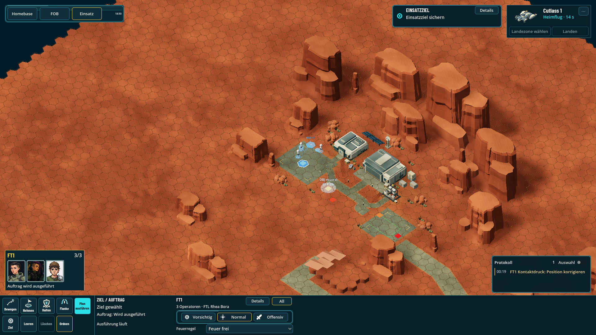

Mission näher an A5, echter Boden bis zur Hexkante
Die linke Fireteamkarte, die kompakte Cutlasskarte und das Protokoll werden direkt an der bestätigten Originalvorlage beurteilt. Das akzeptierte kompakte Befehlsband bleibt Grundlage. Die Bilder sind unveränderte Engineaufnahmen; die Bild-KI-Vorlage ist das Stilziel.

Die gespeicherte Karte besitzt 96×98 echte Hexfelder (9408 Zellen). Der bisherige innere Rand entstand, weil die sichtbare Bodenplatte deutlich größer als die gespeicherte Hexkarte war. Jetzt besteht auch der Boden aus den tatsächlichen gespeicherten Hexflächen bis zu ihrer gemeinsamen Außenkante. Außerhalb liegt ein klar abgesetzter petrolfarbener Hintergrund. Sichtbare Felsen/Gebäude bleiben Hindernisse.
Die Sichtmaske bleibt erhalten. Neue Sichtmeldungen setzen ihren laufenden Aufbau nicht mehr auf null zurück; bereits gebaute Felder werden aus den aktuellen vollständigen Sichtdaten korrigiert. Unbekannte Bereiche bleiben geschützt.